Situaciones problema de una operación
En este capítulo vas a usar la suma, la resta y la multiplicación
¿Qué son las situaciones problema y para qué nos sirven?
Las situaciones problema son ejemplos de acontecimientos que nos podemos encontrar en nuestra vida cotidiana y real, en los cuales necesitaremos de algunas herramientas lógicas y de pensamiento para resolverlas. Es por esto que las matemáticas nos sirven no solo en el colegio si no también en toda nuestra vida y en todas las situaciones que vivimos desde ir a la tienda y saber cuánto debes pagar y cuánto te deben devolver hasta para tomar un autobús y saber cuánto debes pagar y cuánto de debe sobrar.
Las situaciones problema nos sirven para entrenarnos mentalmente en las estrategias que podemos usar para resolver ciertas preguntas que se nos pueden presentar en cualquier momento. Realizar situaciones problemas nos va a ayudar a ser más ágiles y rápidos en el momento de contestar o responder a una pregunta o a alguna situación de nuestra rutina y nuestra vida.
Observa:
Este es José, él ha hecho una compra y ahora tiene una duda sobre cuánto dinero le debe quedar después de pagar:
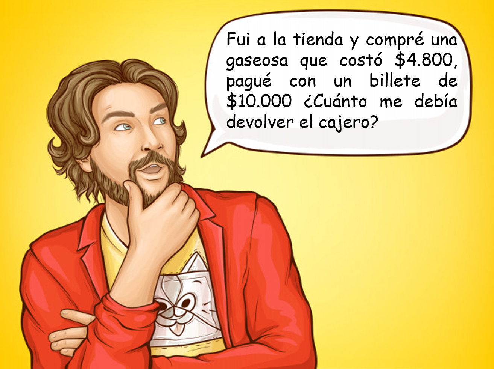Que a ti no pase como a José que no sabe cómo hallar el valor que le sobra. ¡Práctica situaciones problema y ejercita tu cerebro!
- ¿Qué vamos a aprender?
- ¿Cómo resolver situaciones problema de suma?
- ¿Cómo resolver situaciones problema de resta?
- ¿Cómo resolver situaciones problema de multiplicación?
- Paso 1: Lee el problema despacio.
- Paso 2: identifica los datos que te aporta el problema.
- Paso 3: Identifica la pregunta que te hace el problema.
- Paso 4: Elige la operación que le corresponde al problema.
(1)¿Cómo resolver situaciones problema de suma?
Para resolver situaciones problema en los cuales debemos usar la suma es importante primero que identifiquemos las palabras claves que nos están dando las pistas de que si es la suma y no otra operación diferente la que debo usar.
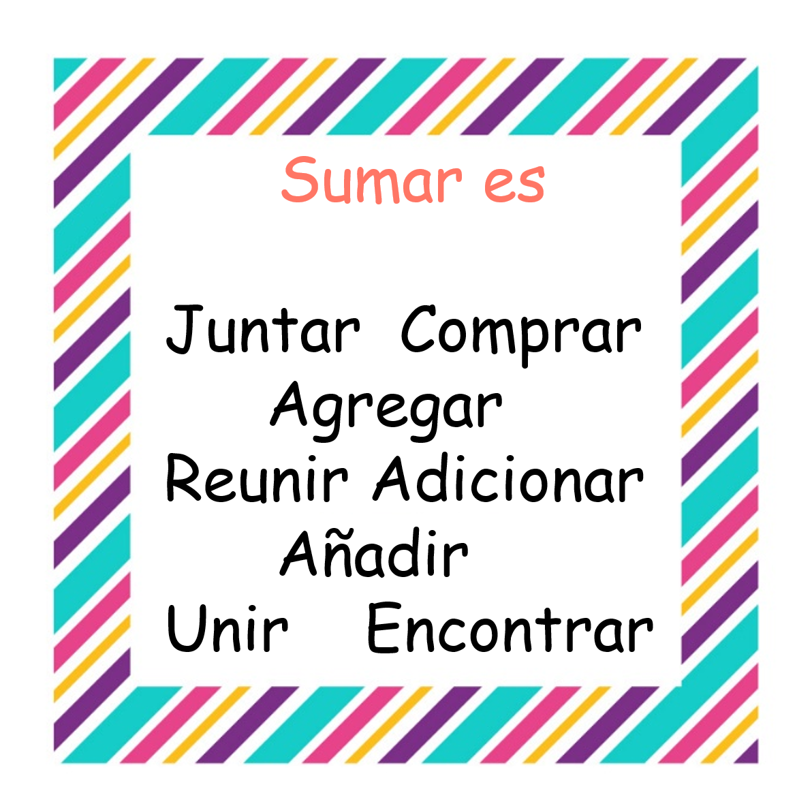Ahora, teniendo estas palabras claves a la vista podemos disponernos a seguir los pasos que vimos en la introducción para resolver la siguiente situación problema:
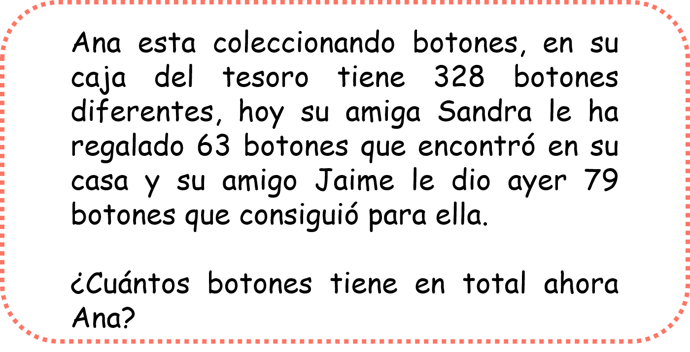Observa:
Luego de leer el problema las veces necesarias para comprenderlo, continuamos con el segundo paso:
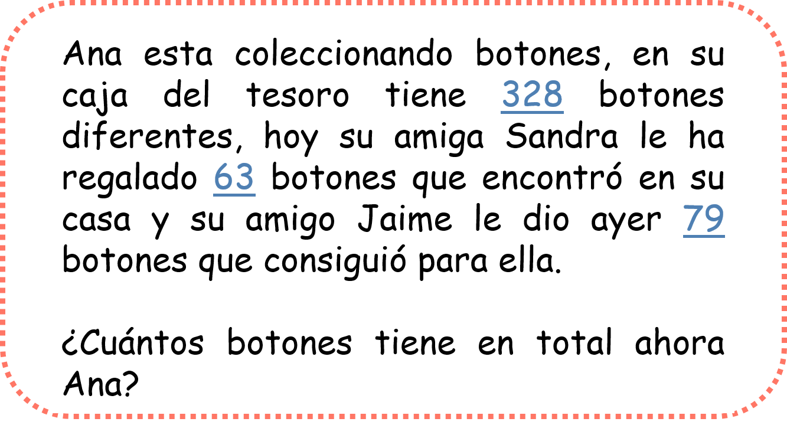Luego de identificar los datos, vamos con el tercer paso:
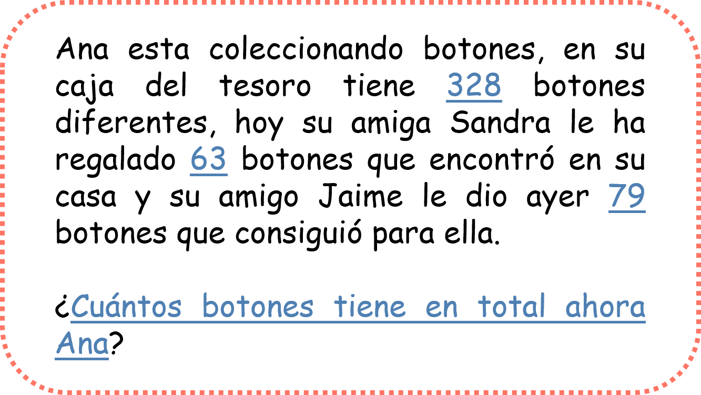Observa que en la pregunta aparece la palabra “En total”, esta es una palabra que casi siempre nos remite a la suma.
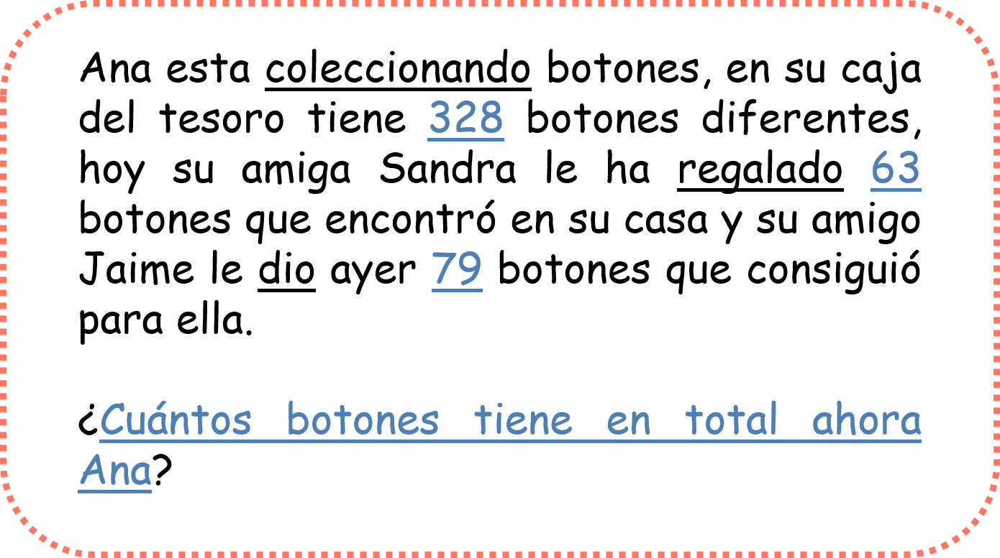Observa ahora que hemos subrayado unas palabras importantes en el problema “coleccionando, regalado y dio” estas tres palabras nos indican que alguien, o sea Ana, está reuniendo cantidades de botones. Esto quiere decir que debemos usar la suma para saber cuántos botones logró reunir al final.
Observa:
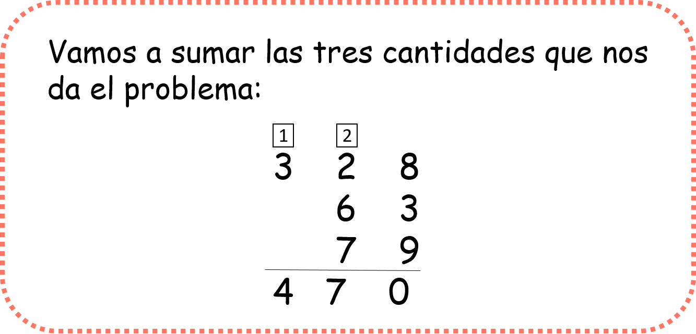Listo! Ana tiene ahora 470 botones en su colección.
(2)¿Cómo resolver situaciones problema de resta?
Para resolver situaciones problema de resta es importante tener en cuenta las palabras clave que nos dan las pistas de que la situación se puede resolver con una sustracción.
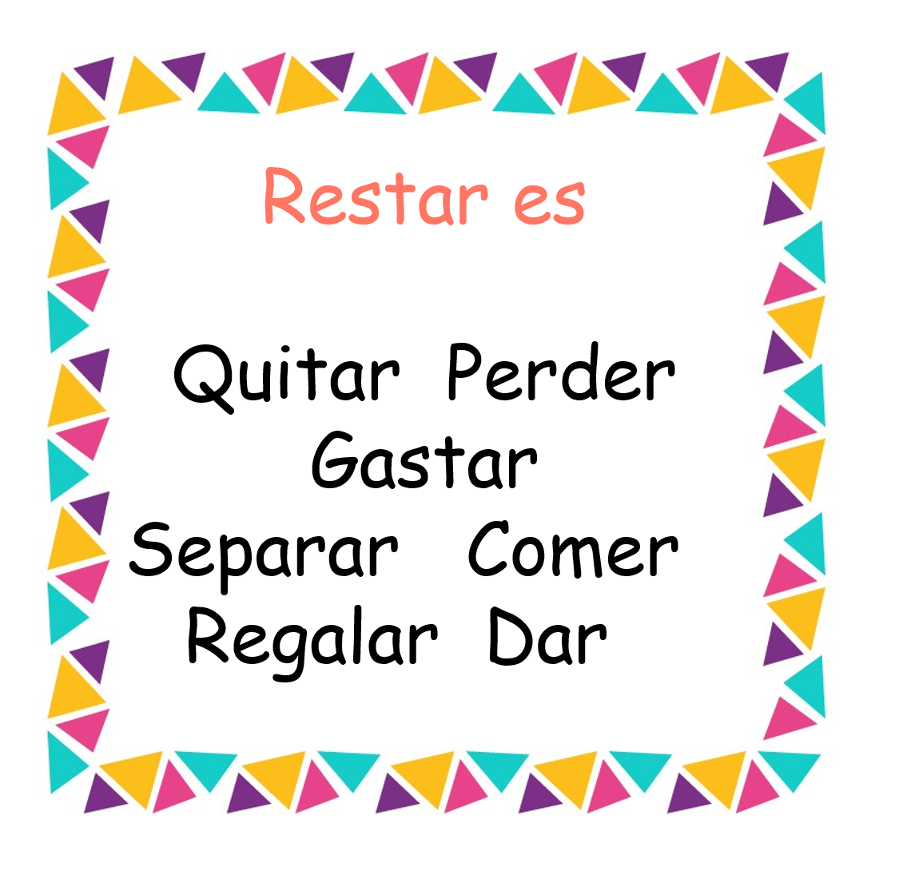Teniendo en cuenta estas palabras que nos recuerdan la resta, vamos a resolver una situación problema de resta siguiendo los pasos enunciados en la introducción:
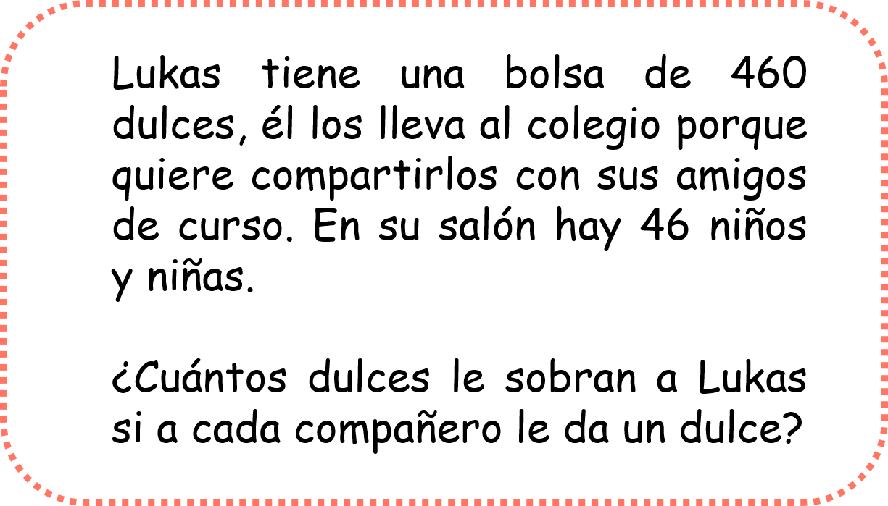Luego de haber leído el problema las veces necesarias, pasamos al paso 2, identificando los datos que nos da el problema, los subrayamos o los encerramos:
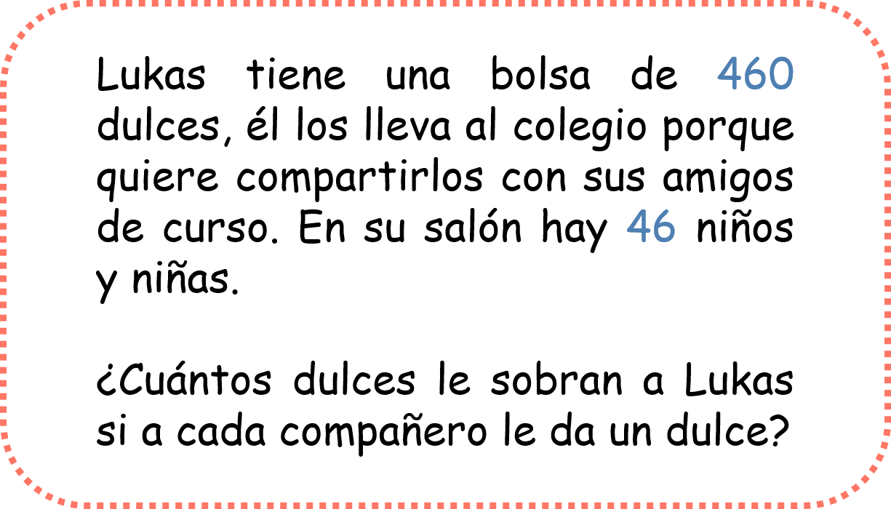Ahora que ya tenemos los datos más visibles pasamos a leer la pregunta con detenimiento, es decir despacio, tratando de comprender lo que me están pidiendo.
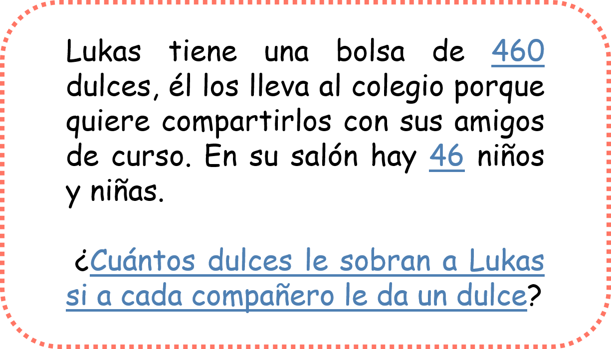Observa que en la pregunta te dan una palabra clave que es “Sobrar”. Para que algo te sobre es porque has gastado otra parte de la cantidad inicial. Otra palabra clave que aparece en la pregunta es “le da” quiere decir que está regalando, sacando partes de la cantidad de dulces que tenía inicialmente. Esto nos indica que debemos realizar una resta.
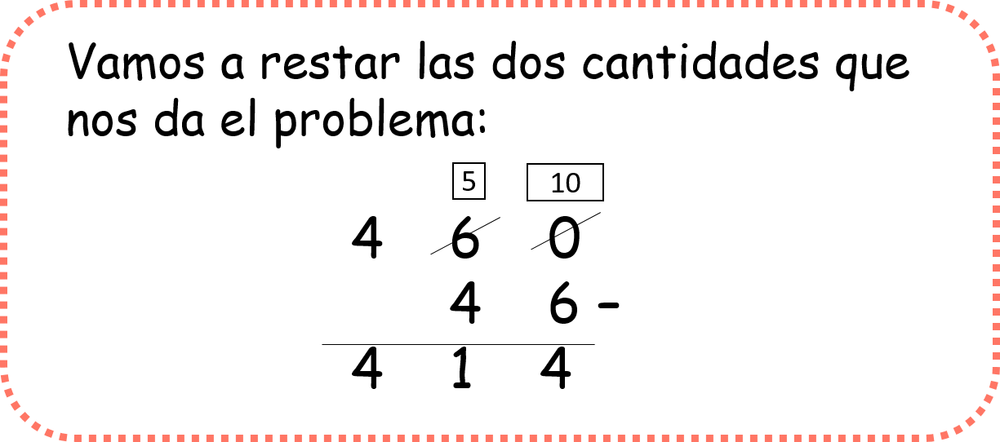Y listo! A Lukas le sobran 414 dulces.
(3)¿Cómo resolver situaciones problema con multiplicación?
Para resolver situaciones problema con multiplicación debemos tener en mente las palabras claves que nos van dando las pistas de que se trata de un problema que podemos resolver con multiplicación y no con otra operación.
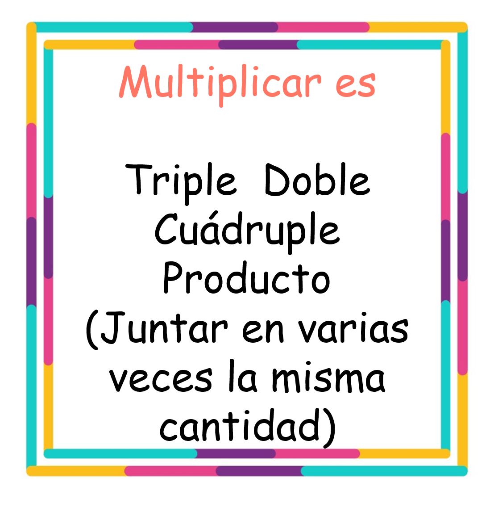Teniendo en cuenta las palabras claves vamos a resolver una situación problema de multiplicación siguiendo los pasos expuestos en la introducción:
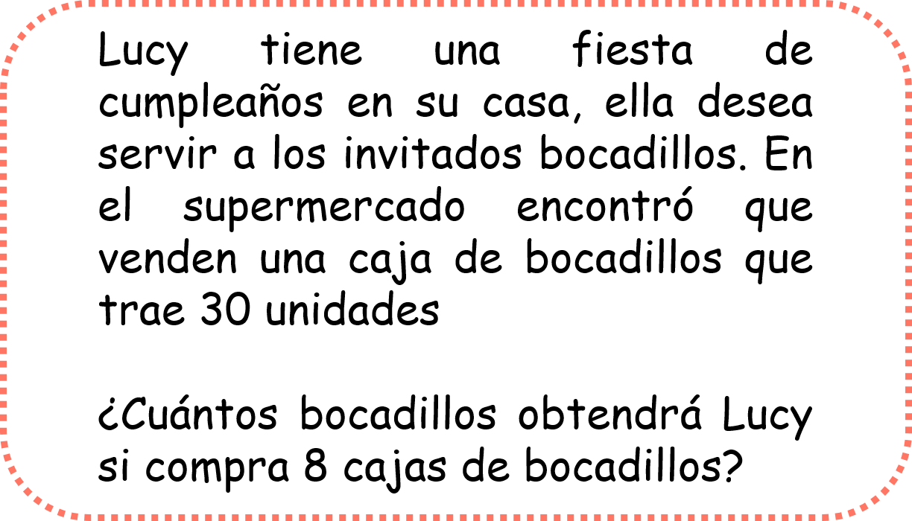Luego de leer el problema las veces necesarias hasta comprender la situación pasamos al paso dos, subrayando los datos que nos aporta el problema:
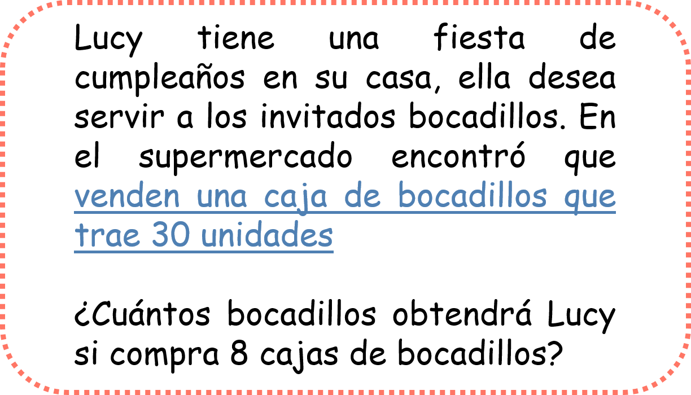Observa que el problema nos ofrece un dato importante “Una caja que trae 30 unidades” es decir que hay una cantidad que se repite varias veces. Ahora pasamos al paso tres, leyendo con detenimiento la pregunta de la situación problema.
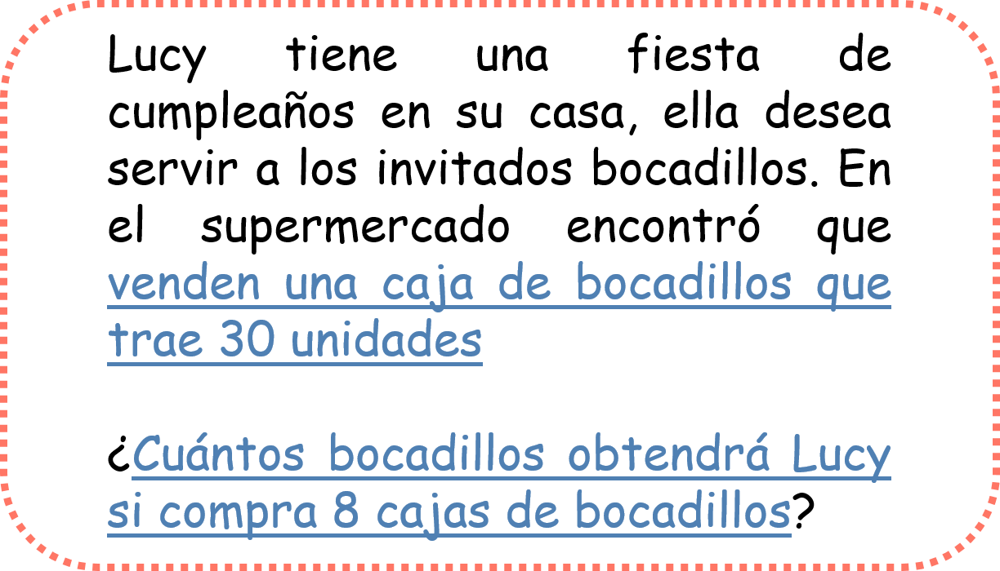Al leer la pregunta nos damos cuenta que nos están preguntando por la cantidad “Total” de bocadillos que hay en 8 cajas, sabiendo que cada caja trae 30 bocadillos. Es cierto que tenemos la posibilidad de hacer dos operaciones diferentes para resolver el problema: una suma o una multiplicación, pero si lo piensas de nuevo, sumar 8 veces 30 es un proceso más largo que multiplicar 30 por 8. Así que lo resolveremos con una multiplicación:
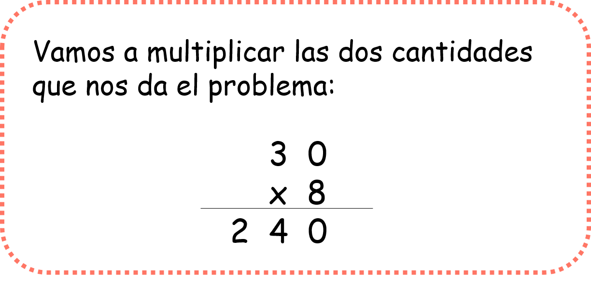Y listo! Lucy obtendría 240 bocadillos si compra 8 cajas.
Material extra para trabajar el tema de situaciones problema:
En el siguiente enlace podrás descargar un cuadernillo de situaciones problema para primaria creado por Orientacionandujar.es
En esta dirección encontrarás diferentes fichas para descargar gratis con situaciones problema para niños y niñas creadas por Edufichas.com
Aquí podrás descargar una ficha sobre problemas de suma y resta ilustrada para niños y niñas creada por Educaplanet.com
En esta dirección encontrarás los enlaces para descargar la app Matemáticas con Grin 456 en diferentes formatos creada por Educaplanet.com
Vídeos orientativos:
En el siguiente vídeo “Sumas y restas problemas matemáticas para niños de 3° de primaria” de Smileandlearn.com encontrarás una explicación divertida de cómo resolver problemas de suma y resta
En este vídeo “La Eduteca- Pasos para resolver un problema de maemáticas” de Laeduteca.blogspot.com encontraras una explicación de los pasos para solucionar situaciones problemas